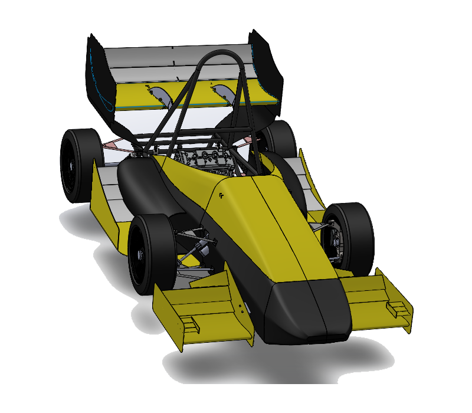
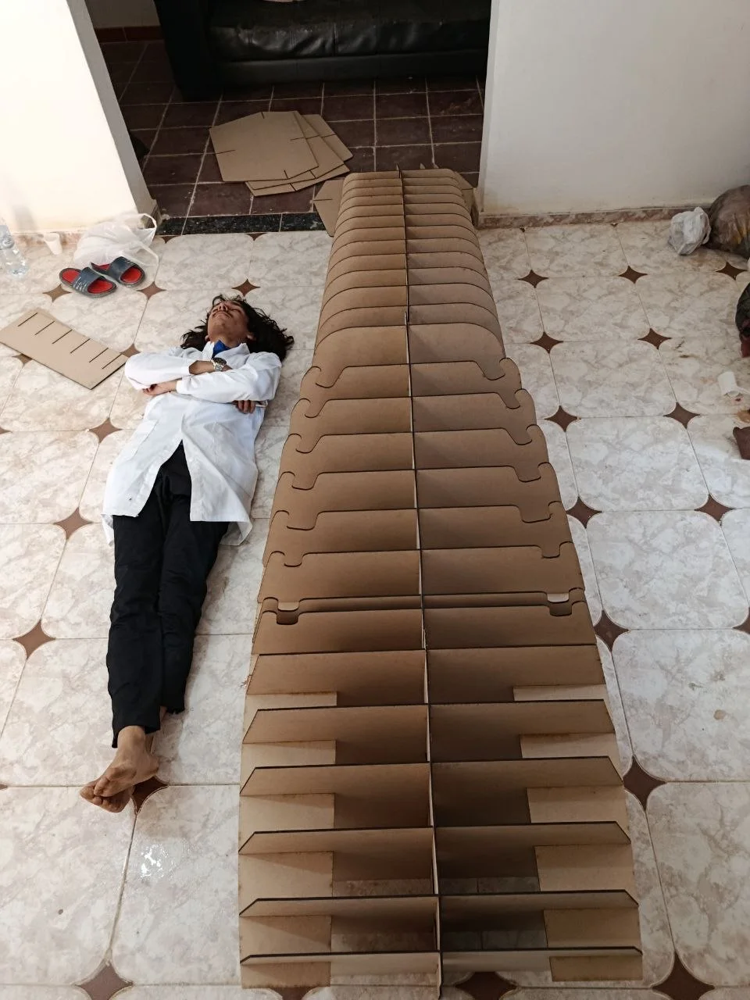
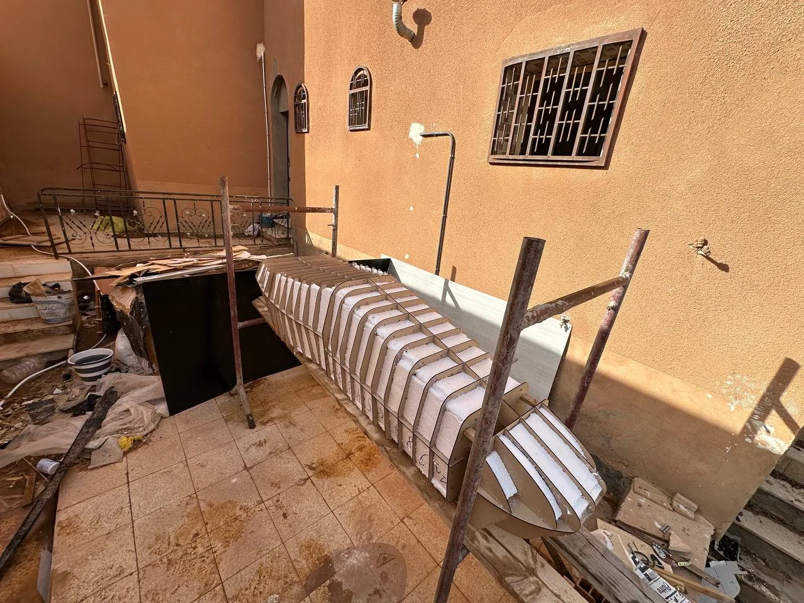
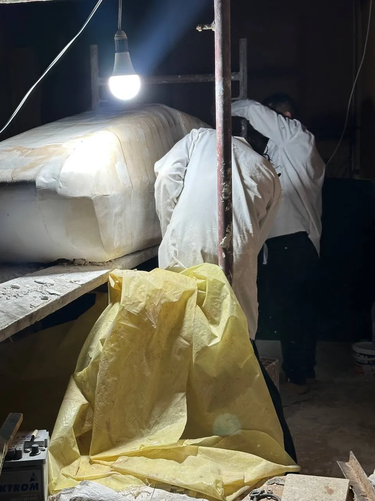
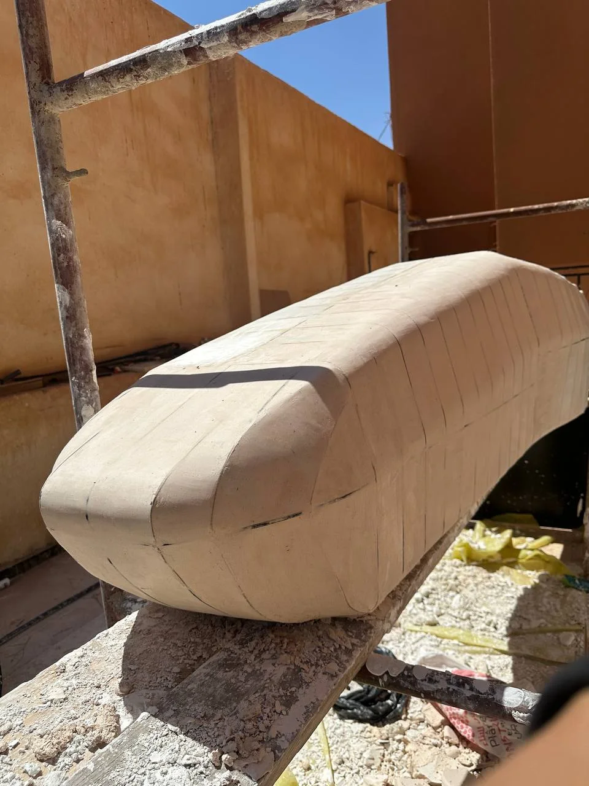
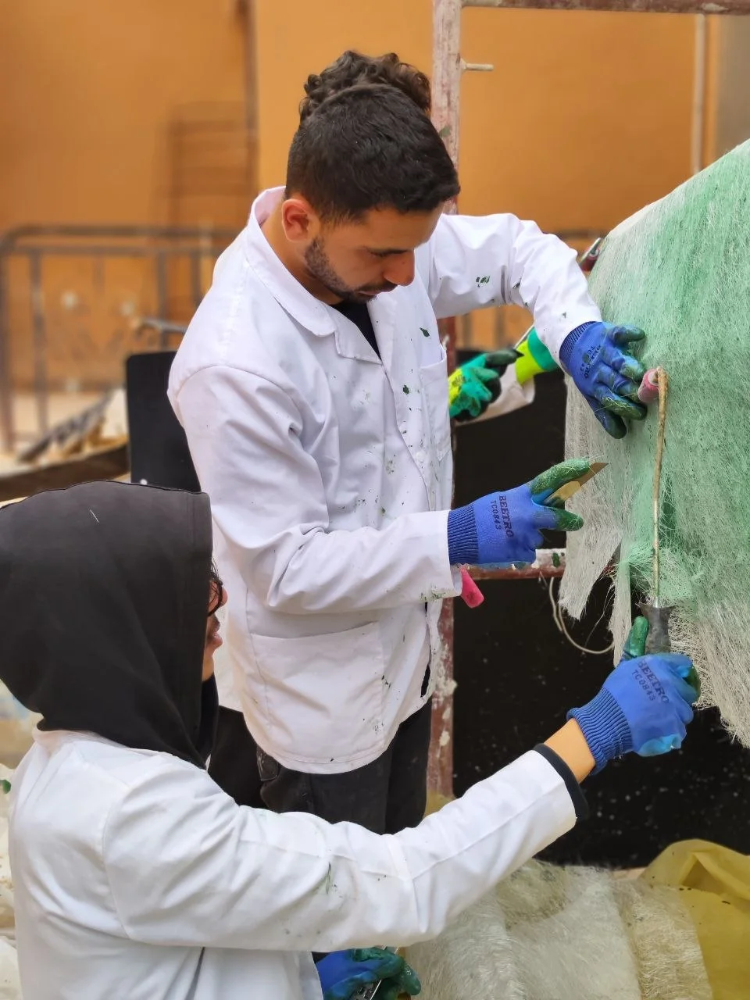
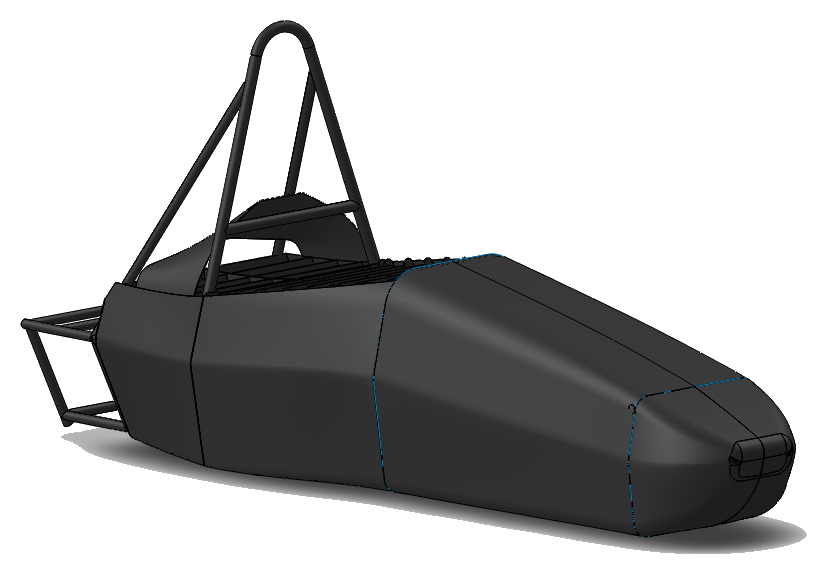
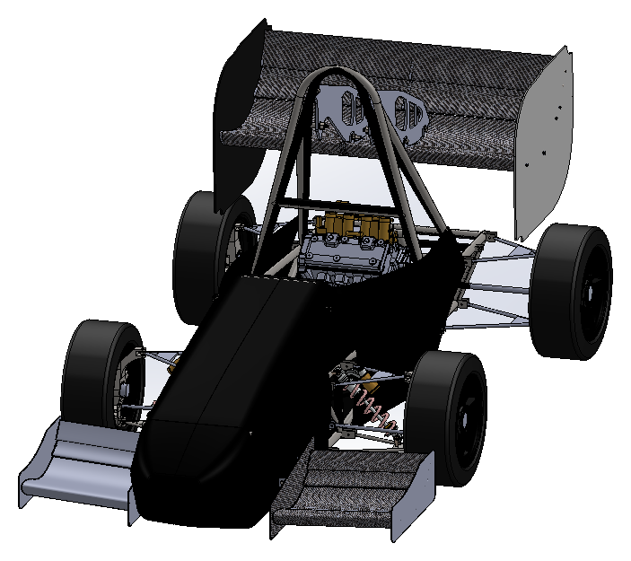
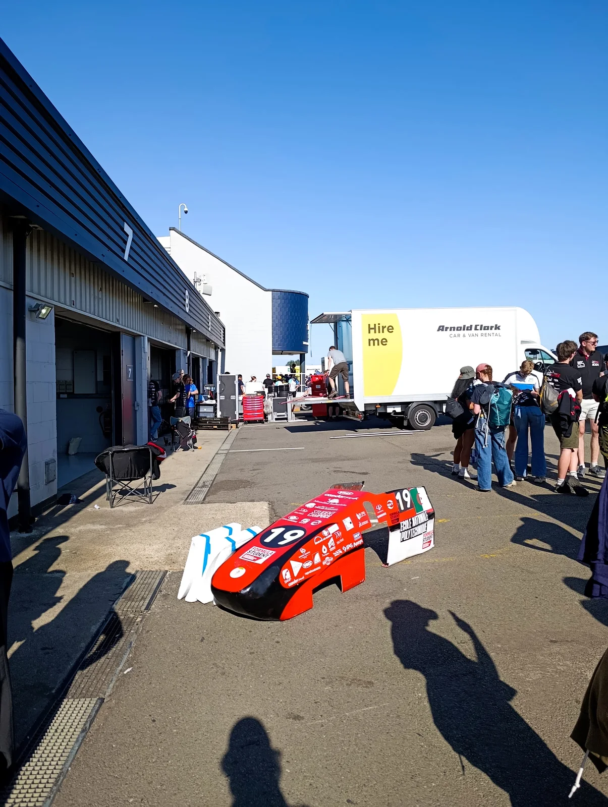

Closer stations capture faster changes in curvature and reduce the amount of shape interpolation required between profiles. They also increase the number of parts and assembly interfaces. The project used more than twenty sections; their exact spacing was not supplied.
THE MANUFACTURING ARGUMENT
A surface became a structure, then a tool.
The engineering problem was to preserve a continuous outer surface through several very different representations: CAD faces, discrete cut profiles, a hand-faired positive and a negative tool. This record explains the decisions that connected those representations—and distinguishes documented project facts from geometry or process data that were not supplied.
20+transverse sections
10+longitudinal splines
03laser-compatible assemblies
04glass-fibre mould layers
02female-mould sections
01
SURFACE MODELLING & VEHICLE PACKAGE
Define the outer shape in the context it has to fit.
The SolidWorks bodywork was developed over the existing chassis, so the exterior could be considered as part of the vehicle package rather than as an isolated styling surface.
Surface modelling is useful for automotive forms because curvature can change continuously across a panel and transition between neighbouring patches. Tangent continuity keeps adjoining faces aligned; curvature continuity controls how quickly that tangent changes. Both matter when judging whether a surface reads as fair and when creating a positive master that can be shaped without abrupt steps.
Working over the chassis also makes the relationship between the proposed outer skin and the underlying vehicle visible during design. It provides a way to check package interfaces before committing the exterior to a physical buck. For aerodynamics, the external contour is the flow boundary: sudden geometric changes can create unfavourable local flow behaviour, so surface continuity is an engineering consideration as well as a visual one.
01Control curvatureManage transitions between adjacent surface regions.
02Design in contextRelate the outer surface to the chassis package.
03Plan the tool pathCarry the digital envelope into a buildable positive.

!
Geometry boundary. The full-vehicle render is authentic project imagery; no native body-surface file, continuity analysis or package dimensions were supplied. The buck CAD view above documents the physical decomposition, not the quality or measurement of the original skin.

02 · AN INDEPENDENT ENGINEERING DECISION
No ready-made tool. No guarantee the decomposition would fit.
“One of the boldest engineering decisions I’ve made.”
I independently conceived the sectional wooden buck and developed the strategy behind it: deriving profiles from the CAD body, linking them with longitudinal splines, dividing the build for the laser cutter and preparing the cutting set.
The decision converted abstract surface geometry into a sequence of parts with physical interfaces. It meant taking responsibility for how the model would be sampled, how the pieces would register and how the full-length structure could be produced with the available equipment. There was no prior fit result to rely on.
For me, the milestone was choosing a reasoned path through uncertainty, then allowing the physical assembly to test that judgement. The successful fit strengthened my confidence in the approach—not a claim that the final surface had been metrologically verified.
The complete buck fitted on its first assembly—without corrective modifications.
The profile photo shows the cut sections before assembly, not the first-fit moment. I owned the concept and engineering strategy; the subsequent workshop operations were collaborative.
03
CAD DECOMPOSITION / SECTIONAL BUCK
Sample the surface; let the framework carry it.
For a two-dimensional laser-cut workflow, a continuous three-dimensional skin had to be represented as a sequence of transverse profiles connected by longitudinal guides.
Each transverse profile is a local slice through the CAD body. Together, the slices define the changing cross-section along the length; the longitudinal splines pass through corresponding points and provide intermediate references between stations. They help a hand-shaped surface follow the intended flow of the model instead of becoming a collection of unrelated ribs.
More than ten splines linked the transverse references. Their role was to carry the contour between sections and give the later manual shaping process a continuous guide along the body.
The profiles are not a surface skin: they form a skeletal reference. The buck becomes the physical bridge between CAD station geometry and the continuous positive plug built over it.
SECTION / SPLINE RELATIONSHIPEXPLANATORY SCHEMATIC · NOT PROJECT DIMENSIONS
Transverse profileLongitudinal splineStation reference
CAD EVIDENCE
The supplied CAD view is the project model; the interactive drawing is only an explanatory abstraction. No native section coordinates, pitch values or dimensions are published here.
04
LASER-CUTTING CONSTRAINT / MODULARIZATION
Keep the designed form; change how it is manufactured.
The complete buck was longer than the available laser cutter’s working dimensions. I divided the framework into three assemblies so its components could be cut within that constraint and joined into the full-length structure.
The section profiles and longitudinal members were prepared as PDF cutting drawings. This was manufacturing-oriented design: the machine envelope changed the production sequence, not the intended bodywork geometry. Each profile had to retain its station identity and orientation, and each module had to preserve the correspondence between its ends and the neighbouring assembly.
That registration is what allows the separate cuts to become one continuous buck. If a profile is reversed, assigned to the wrong station or loses its relationship to the spline layout, the error propagates into the framework and then into the positive surface built over it.
The source PDFs, cutter-bed dimensions and cutting tolerances were not supplied. The diagrams therefore show only the three-part strategy—not module lengths, join details or machine settings.
THREE-ASSEMBLY CUTTING STRATEGY / SCHEMATIC
Profile extraction → PDF cutting set → three laser-compatible assemblies → full-length framework.
05
FIRST ASSEMBLY / DESIGN VALIDATION
The fit check tested the whole chain.
First fit.
No corrective modifications.
Once the profiles had been extracted from the CAD model, prepared for laser cutting and assembled with the longitudinal members, the first complete fit became a practical check of the design strategy. The profile shapes, station order, orientation and interfaces all had to agree well enough for the framework to close into one structure.
The successful assembly showed that the digital decomposition and manufacturing preparation translated into compatible physical parts. It was meaningful validation of the buck’s assembly logic—not a metrology report, a quantified surface-error assessment or a claim of a measured tolerance.
WHY IT MATTERED A mismatch would have forced rework before the foam and plaster stage. A first-fit structure let the team move on to shaping the positive form.

06
FOAM INFILL → POSITIVE PLUG
The buck is a skeleton; the plug is the continuous master.
The wooden framework established discrete shape references. To create a continuous positive surface, the spaces between those references were filled and manually faired.
The materials had distinct jobs: the wooden profiles fixed the section geometry, foam filled the volume between them, and plaster provided a workable allowance for shaping. The foam was deliberately left inside the target outer contour. That offset reserved material for manual fairing rather than letting the foam define the finished surface too early.
BUCK → FOAM → PLASTER → POSITIVEILLUSTRATIVE SECTION · NO DIMENSIONS
The sections and splines are references in the build; the finished plug is a continuous positive surface, not the open buck.
From station checks to a fair surface
During manual development, the exposed wood gave repeatable section checkpoints. The longitudinal splines carried a continuous guide between them, helping the shaping process maintain the intended form along the length instead of forming flats between ribs.
As plaster was shaped back toward the target contour, the result changed category: the buck was the open structural framework; the positive plug was the continuous master surface used to create the female tool.
Woodsection references
Foaminfill volume
Plastershaping allowance


07
FEMALE MOULD / GLASS-FIBRE LAMINATE
Build the negative tool over the positive master.
A female mould is the negative counterpart of the plug: its working face follows the plug’s exterior so a composite body laid into the tool can reproduce that designed surface.
The documented mould laminate began with one 100 g/m² glass-fibre layer for conformance, then added three 300 g/m² reinforcement layers. The light first ply is suited to following compound curvature and retaining surface detail; the heavier subsequent plies build the tool skin and contribute to its stiffness and structural integrity. No stiffness value or finished-tool measurement was supplied.
DOCUMENTED MOULD LAYUPFOUR PLIES · SCHEMATIC SECTION
Layer spacing is illustrative, not thickness to scale.
Why the first ply is different
The 100 g/m² layer is the conforming layer nearest the plug. Its lighter areal weight allows it to follow compound curvature more readily than a heavier reinforcement ply, helping the mould reproduce the master’s local shape.
Then build the tool skin
Three 300 g/m² plies follow as reinforcement. Building the laminate progressively from the detail layer outwards is intended to retain contact with the plug while the tool skin gains thickness and stiffness. The supplied record does not state fibre orientation, resin chemistry, vacuum use or cure conditions; none are inferred here.
A bridging gap at the plug would transfer a shape error into the negative tool. Maintaining conformity through the laminate build is therefore the controlling geometric requirement, not a claimed measured result.

TWO-PART TOOL / RELEASE & REASSEMBLY
Split the tool where it can be released and brought back together.
A one-piece negative can trap a positive form or make access to the part difficult when the geometry wraps around itself. Dividing the female mould into two sections creates a release path and makes each half more accessible to handle.
Mounting points along the separation line provide the means to bring the two sections back together in their working relationship. The supplied CAD views show the bodywork and its vehicle context, not the actual mould split direction or mounting layout; those details are not inferred here.
PROJECT CAD / BODYWORK CONTEXTSUPPLIED MODEL VIEWS · NOT TOOL GEOMETRY


The white screenshot backgrounds have been removed; the source CAD geometry is unchanged. These views contextualise the bodywork and do not document the mould split or prove a completed bodywork-on-car installation.
08
FINAL COMPOSITE BODYWORK
Transfer the designed surface into a part, then to the vehicle.
The female mould carries the negative of the plug; a composite body formed against its working face returns to the intended positive exterior.
The bodywork reached a finished-shell stage. The supplied event photograph documents the red body shell displayed separately; it does not establish installation on a complete chassis. No detailed trim, joining or fit-up procedure was supplied, so those operations are not reconstructed here.

CASE STUDY CONTINUES
For aerodynamic design decisions and simulation evidence, read the companion study.
Open the aero case study